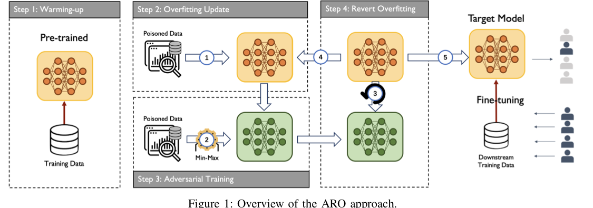

Rigging the Foundation: Manipulating Pre-training for Advanced Membership Inference Attacks
IEEE S&P 2025

Abstract
Significant advances in computing power have led to a surge in model complexity. Training such models increasingly relies on transfer learning, where a model is pre-trained on large datasets and then fine-tuned for downstream domains. This allows knowledge in the pre-trained model to be reused and adapted, but it also opens new attack surfaces. In particular, we study a previously unexplored privacy risk: an adversary can manipulate the pre-training process so that the resulting fine-tuned model becomes vulnerable to privacy attacks, such as membership inference attacks (MIAs), which determine whether a sample appears in the fine-tuning dataset. A key challenge is amplifying membership leakage while preserving downstream utility. To address this challenge, we introduce active robustness overfitting (ARO), which intentionally induces robustness overfitting during pre-training. ARO amplifies membership leakage in downstream tasks without harming model accuracy and remains stealthy. Extensive evaluations across diverse datasets and MIA settings show that our method effectively increases leakage while maintaining strong downstream test performance, offering new insights into transfer-learning privacy risks.
Resources
Citation
@inproceedings{WZZTW25,
author = {Zihao Wang and Rui Zhu and Zhikun Zhang and Haixu Tang and Xiaofeng Wang},
title = {{Rigging the Foundation: Manipulating Pre-training for Advanced Membership Inference Attacks}},
booktitle = {{S&P}},
publisher = {IEEE},
year = {2025},
}